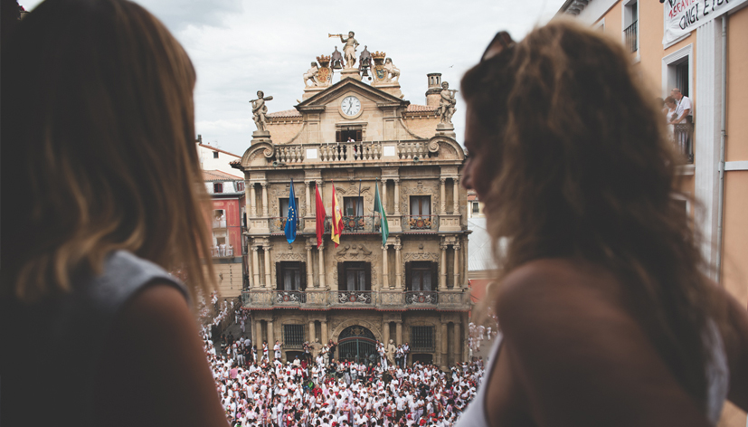

Qué hacer en San Fermín
Una guía completa con todos los planes, momentos y experiencias para vivir San Fermín de verdad.
Leer másSan Fermín es mucho más que una fiesta. Durante ocho días, Pamplona se transforma en un entorno lleno de momentos únicos donde tradición, emoción y ambiente se viven de forma continua.
Nuestras experiencias están pensadas para quienes buscan algo más que estar: desde ver el encierro desde un balcón privado hasta vivir el chupinazo o descubrir momentos más exclusivos de la fiesta. Cada propuesta se adapta a lo que quieres vivir, con un enfoque cuidado y personalizado.
Si es tu primera vez o quieres entender mejor cómo encajar cada momento dentro de la fiesta, puedes apoyarte en nuestras guías sobre San Fermín. Y si buscas algo más adaptado a tu forma de viajar o al grupo con el que vienes, también diseñamos experiencias a medida.


Cada momento de San Fermín se vive de forma diferente. El encierro concentra intensidad y emoción, el chupinazo marca el inicio de la fiesta y la procesión refleja su lado más tradicional.
Muchas personas combinan varios momentos o buscan algo más flexible. En esos casos, diseñamos experiencias personalizadas, adaptadas al ritmo, al grupo y a lo que realmente se quiere vivir.
También trabajamos con empresas que necesitan organizar experiencias para clientes o equipos, como explicamos en San Fermín para empresas. Y si quieres entender mejor cómo encaja todo dentro de la fiesta, puedes explorar nuestras guías sobre experiencias exclusivas.
Hay fiestas. Y luego está San Fermín.
Durante ocho días, Pamplona se transforma con una intensidad difícil de explicar. No es solo una celebración; es una forma de estar, de compartir y de formar parte de algo que viene de lejos.
Este proyecto nace desde dentro, desde una relación real con la fiesta. No como una oferta más, sino como una forma de compartir San Fermín con quienes buscan vivirlo de una manera diferente, como contamos en quiénes somos.
Cuéntanos cómo quieres vivir San Fermín y te proponemos una experiencia personalizada.
Algunas experiencias no terminan cuando acaba el evento. Para grupos, empresas o momentos especiales, podemos acompañarlo con piezas diseñadas específicamente para la ocasión.
Desde elementos sencillos hasta detalles más cuidados, todo se plantea como una extensión natural de la experiencia.
Porque a veces lo que se lleva puesto también forma parte de lo vivido.